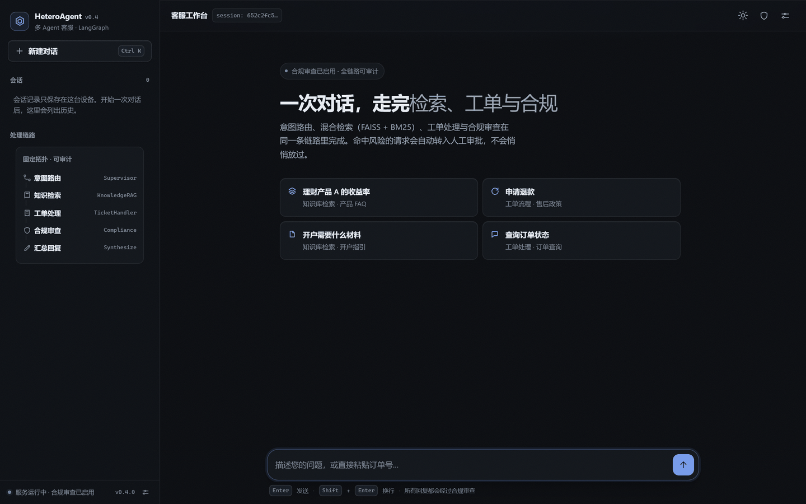

HeteroAgent
多 Agent 客服 · LangGraph
把合规、检索与工单，收进一条对话流
静态演示版：界面与真实项目同一套代码，后端替换为浏览器内的脚本化实现。 可以体验阶段进度、Markdown 渲染、合规拦截、人工审批、历史与指标，不调用真实模型。
零构建 · 原生 ES 模块
零外链 · 离线可渲染
明暗双主题
移动端抽屉

想体验合规拦截：在演示里发送「你们能保证收益吗？」
真实链路（真实 LLM + FAISS 检索 + 审批恢复）见仓库 README；演示页不包含任何密钥。